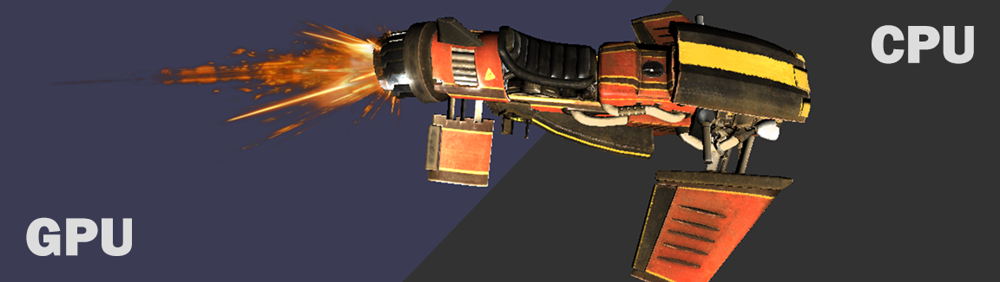

CPU/GPU rasterizer (3DX11)
In the world of computer graphics, my CPU and GPU rasterizer project stands as a testament to the convergence of art and technology. The primary objective of this endeavor was to seamlessly transition between rendering scenes on the GPU and CPU, allowing users to switch rendering modes with a simple click. Leveraging the power of DirectX's Effects shader system, this project offers a captivating glimpse into the inner workings of graphics rendering, implemented entirely on the CPU.
My versatile rasterizer boasts an array of impressive features, showcasing its capabilities:
- Runtime Render-Mode Switch: A unique feature allows users to toggle between CPU and GPU rendering on the fly, providing insights into the intricacies of both approaches.
- Triangle Mesh Rasterizing: It efficiently rasterizes complex triangle meshes, transforming 3D models into vibrant 2D representations.
- Camera Control: It efficiently rasterizes complex triangle meshes, transforming 3D models into vibrant 2D representations.
- Culling Modes: The ability to choose between front-face culling, back-face culling, or no culling for meshes provides flexibility in scene optimization.
- Lighting: The ray tracer incorporates both point lights and directional lights, facilitating the creation of compelling lighting effects and shadows.
- Shadows: The project implements hard shadows, enhancing the visual realism of scenes.
- Scene Cycling: The ray tracer can seamlessly cycle through different scenes, showcasing its versatility in rendering various environments.
- Transparency: Although not entirely implemented in the CPU rasterizer, transparency effects add depth and realism to scenes, especially in GPU rendering.
- Sampling State Cycling: Users can cycle through different sampling states, including Point, Linear, and Anisotropic (limited to GPU rendering), to control texture quality and performance.
- Texture Variety: The rasterizer supports multiple texture types, including Diffuse, Normal, Glossiness, and Specular maps, enhancing the visual richness of models.
- Texture Map Toggling: Users can toggle the use of different texture maps, granting control over the rendering process.
- Turntable Feature: The project includes a turntable function, allowing for smooth and continuous rotation of models, perfect for showcasing 3D assets.
- Frustrum Culling: Enhancing performance, frustrum culling prevents the rendering of objects outside the camera's view, optimizing scene rendering.
My CPU and GPU rasterizer project represents a captivating fusion of technical prowess. It offers a window into the intricate world of graphics rendering and the magic that transpires when art meets technology. This project serves as a stepping stone towards new horizons in this ever-evolving field
Rendering Showcase: